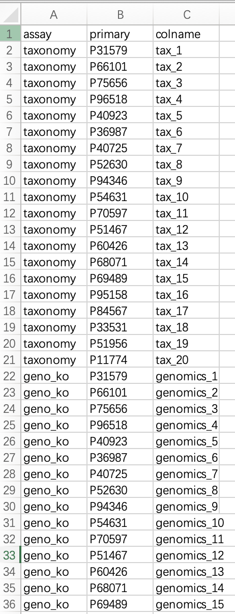
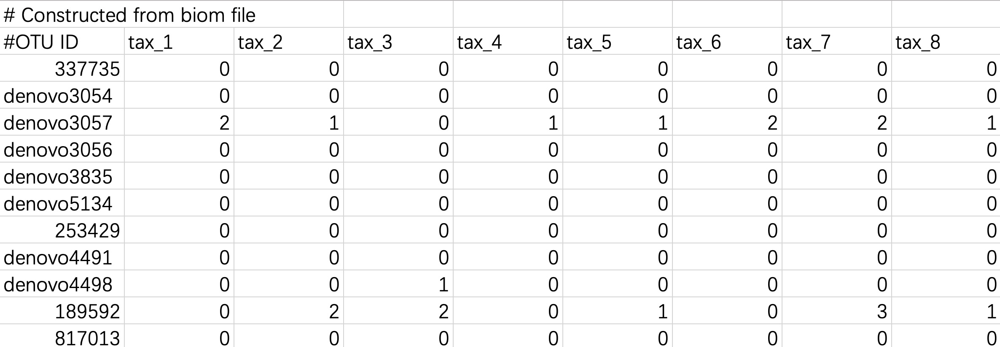
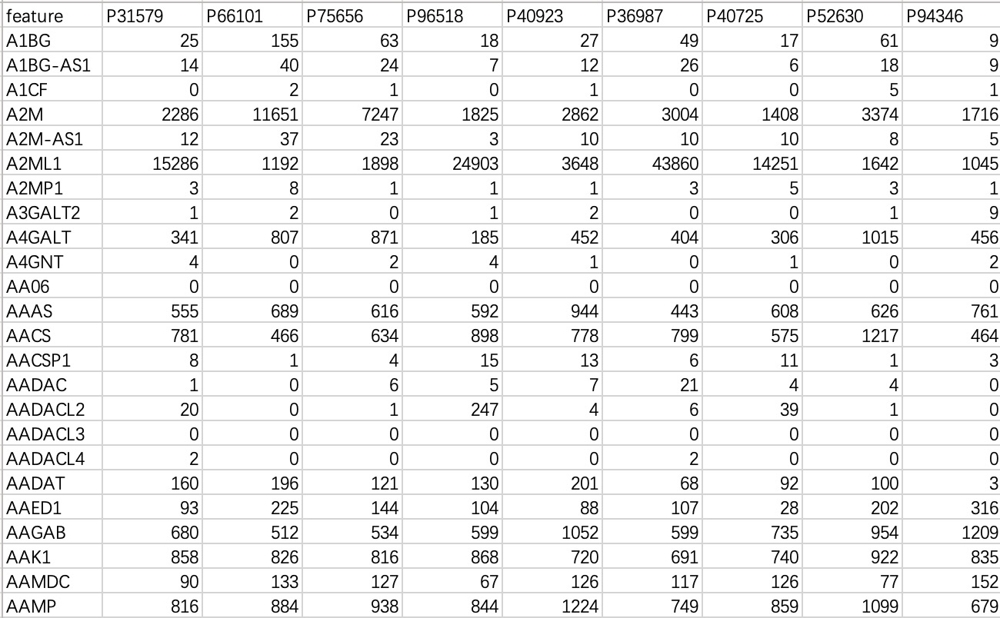
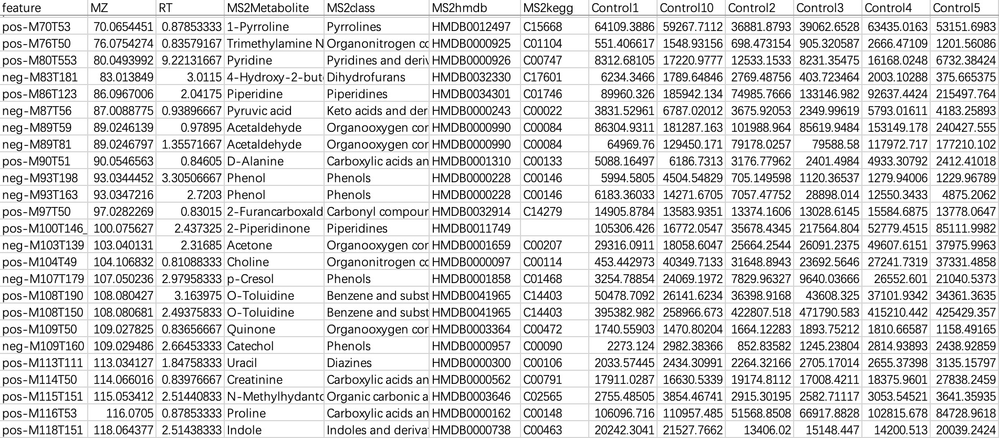

2 创建MultiAssayExperiment对象
本章节主要介绍如何将多组学数据导入分析流程的数据容器。
2.1 创建多组学项目的MultiAssayExperiment对象
当用户处理多个组学数据时，需要将数据导入并组合成一个MAE对象。

2.1.1 创建样本与受试者关系表
由于各个组学数据中样本的名称和实际采样名称（受试者名称）不一致。因此，我们需要建立组学数据内样本名称和实际采样名称（受试者名称）的关系表，以便将全部数据导入MultiAssayExperiment对象内。这样在后续的分析中，EasyMultiProfiler可以自动将各个组学数据自动替换成实际采样名称（受试者名称）。
关系表中的列名称必须为assay,primary,colname。其中assay为组学的名称，用户可以自定修改定义。primary为实际采样名称（受试者名称），需与表型数据中的名称一致。colname为各个组学中实际样本样本的名称。
此表需要保存为文件，读入R中。教程里可以命名为dfmap。用户也可以手动在R内通过数据框直接创建。
dfmap <- read.table('dfmap.txt',header=TRUE,sep='\t')

2.1.2 读取表型数据注意事项：
表型数据一般指样本的基本信息，如受试者的个人信息、量表结果、检查数据等。如果部分结果中存在缺失值，请直接留空，不要用NA，-，missing等字符展位，影响后续的连贯操作。数据的第一列请设置为样本的名称，在读取时将其设置为行名（重要）。
## row.names=1 必须将样本名作为行名
meta_data <- read.table('col.txt',header = T,row.names = 1)

2.1.3 读取微生物组学数据
微生物数据一般指各种微生物上游注释工具产出的包含各个样本内微生物丰度信息的结果文件。常见的结果文件，一般分为ASV/OTU表格，门纲目科属种级别丰度表，MetaPhlan和Humann产生的带有层级关系的丰度表，BIOM格式文件和QIIME2专属的QZV文件。EMP_taxonomy_import支持以上全部格式结果输入，将其转化为SummmariseExperiment对象文件。
2.1.3.1 读取ASV/OTU表格
此文件内第一行和第二行的“#”字符无需修改。数据文件内必须要包含taxonomy的物种注释信息。

tax_data <- EMP_taxonomy_import('tax.txt',duplicate_feature=TRUE)
2.1.3.2 读取门纲目科属种级别丰度表
由于高分类级别数据可以计算出低分类级别数据，因此建议用户直接使用最高分类级别的数据导入。

tax_data <- EMP_taxonomy_import('tax.txt')
2.1.3.3 MetaPhlan和Humann的分类注释表
此注释表的物种注释包含层级结构，一般包含了界门纲目科属种各级别全部结果信息。EMP_taxonomy_import可以自动识别最高分类级别注释信息，并导入完整分类数据。注意需要将humann_format=TRUE。

tax_data <- EMP_taxonomy_import('tax.txt',humann_format=TRUE)
2.1.3.4 BIOM格式文件
BIOM格式是QIIME1流程中常见的物种注释结果文件，部分用户也会将QIIME2流程的物种注释文件保存为BIOM格式便于数据存储。EMP_taxonomy_import可以直接读取biom格式文件，并导入数据信息。注意file_format='biom'
tax_data <- EMP_taxonomy_import('tax.biom',
file_format='biom',duplicate_feature=TRUE)
2.1.3.5 BIOM格式文件转化后的表格文件
BIOM文件可以利用biom convert方法转换成表格文件，也可以直接导入。无需修改表头和#符号。
tax_data <- EMP_taxonomy_import('tax.txt',duplicate_feature=TRUE)

2.1.3.6 qzv格式文件
在Qiime2流程qiime taxa barplot会产生微生物注释结果qzv文件。EMP_taxonomy_import可以直接读取这个qzv格式文件，并导入数据信息。注意file_format='qzv'
tax_data <- EMP_taxonomy_import('tax.qzv',
file_format='qzv',duplicate_feature=TRUE)
2.1.4 读取KO/EC组学数据
2.1.4.1 普通表格形式
本数据主要指宏基因组或者宏转录组学注释的以KO或者EC编号注释的结果文件。EMP_function_import可以直接读取注释表格，并查询KEGG数据库整合对应的注释信息。注意编码中必须是纯KO和EC编号。

ko_data <- EMP_function_import('ko.txt',type = 'ko')
ec_data <- EMP_function_import('ec.txt',type = 'ec')
2.1.4.1 Humann格式
本数据是由Humann工具产生的分层KO/EC注释表。EMP_function_import会忽略掉UNGROUPED的信息，直接读取注释表格，并查询KEGG数据库整合对应的注释信息。注意文件的表头需要清理干净，删除#等字符。

ko_data <- EMP_function_import('ko.txt',type = 'ko',humann_format = TRUE)
2.1.5 读取标准表格信息
本数据一般用于转录组数据或者代谢组数据等特征无须特殊格式的数据导入
2.1.5.1 不含特征信息的数据导入
本数据一般常见于转录组或者基因组数据，行为基因，列为样本。

tran_data <- EMP_normal_import('tran.txt')
2.1.5.2 包含特征信息的数据导入
本数据一般常见于代谢组学数据，行为基因，列为样本和特征的注释。导入这种数据时，需要指定数据内样本的内容。

# 直接指定样本名称
idx <-c("Control1", "Control10", "Control2", "Control3", "Control4", "Control5", "Control6", "Control7", "Control8", "Control9", "Treat10", "Treat1", "Treat2", "Treat3", "Treat4", "Treat5", "Treat6", "Treat7", "Treat8", "Treat9")
metbol_data <- EMP_normal_import('metabol.txt',sampleID = idx)
# 利用关系表来判断样本名称
metbol_data <- EMP_normal_import('metabol.txt',sampleID = idx,
dfmap = dfmap,assay = 'untarget_metabol')
2.1.6 整合全部数据导入MultiAssayExperiment对象
注意：1. 这里的dfmap就是 2.1.1中的关系表。2. objlist内命名必须与关系表中的组学名称assay保持一致。
#### 关系表的assay要转换为因子
dfmap$assay <- as.factor(dfmap$assay)
#### 注意这里的命名必须与关系表中的组学名称保持一致
objlist <- list("taxonomy" = tax_data,
"geno_ko" = ko_data,
"geno_ec" = ec_data,
"untarget_metabol" = metbol_data,
"host_gene" = geno_data)
MAE <- MultiAssayExperiment::MultiAssayExperiment(objlist, meta_data, dfmap)
2.2 创建单一组学项目的MultiAssayExperiment对象
有时用户只有单一的组学数据比如微生物组学数据或者转录组学数据，可以使用EMP_easy_import快速构建MultiAssayExperiment对象，直接进行下游分析流程。注意：1. type参数包含tax,ko,ec和normal四种方式，需要用户根据上文判断使用。2. 在此模式中，丰度矩阵的样本名称必须与表型数据中的样本名称一致。
## row.names=1 必须将样本名作为行名
meta_data <- read.table('col.txt',header = T,row.names = 1)
MAE <- EMP_easy_import('tran.txt',coldata = meta_data,type = 'normal')
MAE <- EMP_easy_import('tax.txt',coldata = meta_data,type = 'tax')
MAE <- EMP_easy_import('ko.txt',coldata = meta_data,type = 'ko')